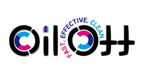

Trade Mark Journal No.2025/015 11 April 2025
UK00004177940 23 March 2025 (3)

- Class 3
- Bleaching preparations and other substances for laundry use; Cleaning, polishing, scouring and abrasive preparations; Non-medicated cosmetics and toiletry preparations; Non-medicated dentifrices; Perfumery, essential oils; Sanitary preparations being toiletries; Tissues impregnated with cosmetic lotions; Deodorants for human beings or for animals; Room fragrancing preparations; Nail art stickers; Polishing wax; Sandpaper; Abrasive paper; Abrasives; Chemical cleaning preparations for household purposes; Cleaning chalk; Cleaning preparations; Preparations for cleaning dentures; Cleansers for intimate personal hygiene purposes (non-medicated); Cleansing milk for toilet purposes; Cloths impregnated with a detergent for cleaning; Creams for leather / waxes for leather; Dentifrices (non-medicated toothpaste); Adhesives for affixing false eyelashes; Adhesives for affixing false hair; Adhesives for cosmetic purposes; After-shave lotions; Aloe vera preparations for cosmetic purposes; Antistatic dryer sheets / antistatic drier sheets; Astringents for cosmetic purposes; Baby wipes impregnated with cleaning preparations; Balms, other than for medical purposes; Bath preparations, not for medical purposes; Bath salts, not for medical purposes; Beard dyes; Beauty masks; Cosmetic preparations for skin care; Cosmetics; Cosmetics for children; Cotton wool for cosmetic purposes; Air fragrance reed diffusers; Air fragrancing preparations; Amber (perfume); Aromatics (essential oils); Perfumes; Perfumery; Phytocosmetic preparations; Potpourris (fragrances); Sachets for perfuming linen; Bleaching preparations (decolorants) for cosmetic purposes; Bleaching preparations (decolorants) for household purposes; Bleaching salts; Bleaching soda; Laundry bleach / laundry bleaching preparations; Laundry blueing; Laundry glaze; Laundry preparations; Laundry soaking preparations; Fabric softeners for laundry use; Stain removers; Starch for laundry purposes; Hair conditioners; Hair dyes / hair colorants; Hair lotions; Hair spray; Hair straightening preparations; Hair waving preparations; Sunscreen preparations; Shaving preparations; Shaving soap; Dental bleaching gels; Dentifrices (toothpaste); Mouthwashes (not for medical purposes); Teeth whitening strips; Deodorants for pets; Floor wax; Floor wax removers; Petroleum jelly for cosmetic purposes; Rust removing preparations; Turpentine for degreasing; Vaginal washes for personal sanitary or deodorant purposes; Windscreen cleaning liquids / windshield cleaning liquids.
Huiwen Zhen